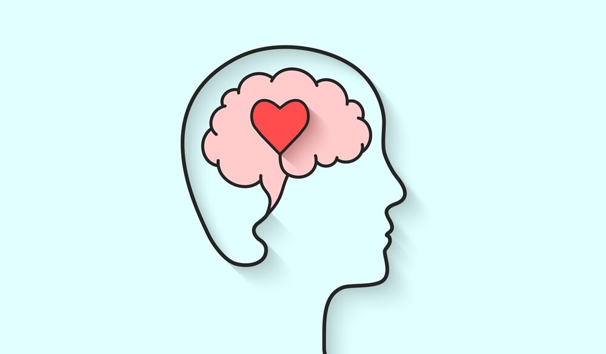
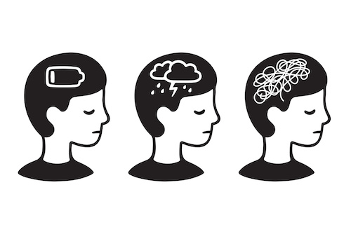
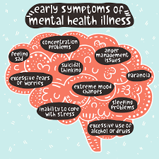
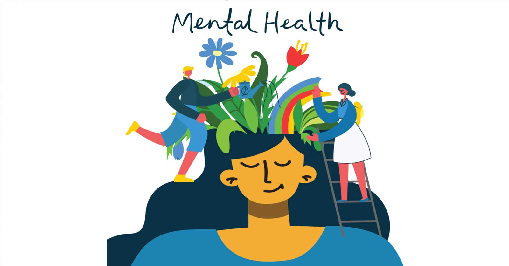
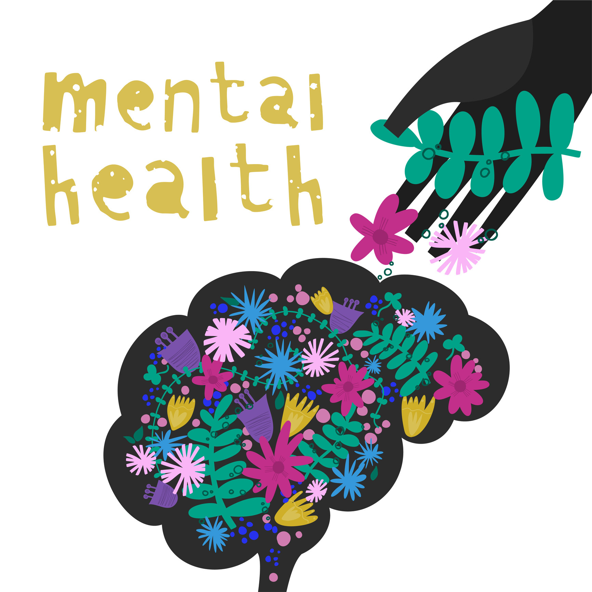

our-mission

What is Mental Health?
Mental health includes our emotional, psychological, and social well-being. It is all about how people think, feel, act and behave. It is a state of well-being in which every individual realizes his or her own potential, and can cope with normal stresses of life.

Why is it Important?
Mental health and physical health are closely connected. Mental health plays a major role in people's ability to maintain good physical health. Mental illnesses, such as depression and anxiety, affect people's ability to participate in health-promoting behaviors.

What causes Mental Illness?
Stressful life situations, financial problems, demise of loved ones, sexual harassment, physical abuse, mental abuse, traumatic life,severe alcohol or drug use,hereditary mental illness,feelings of inferiority, reduced self-esteem, extreme social anxiety

Our Solution
We have created an interactive website which people can use to sway away their anxiety and depression and eliminate sense of inferiority.

Our Solution
We make this website interactive with features like Baatchit, Diary-Entry, Music, Mood-Tracker, Comics, etc which will serve to different problems.

Our Solution
We Believe with our interactive website we can raise awareness about mental health and well-being and help people suffering from it.